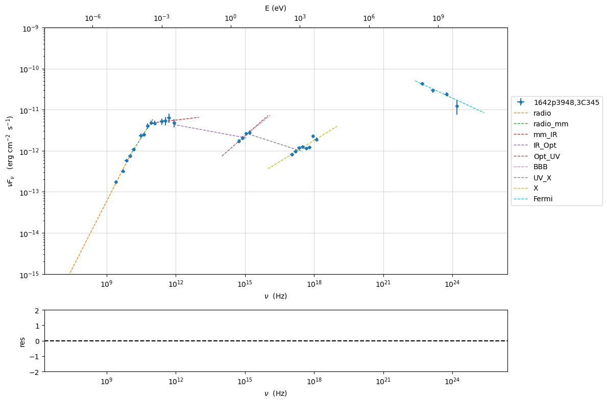

import warnings
warnings.filterwarnings('ignore')
Model fitting 3: External Compton#
Loading data#
see the data_format user guide for further information about loading data and External Compton for the information regarding the implementation of the external Conpton model
from jetset.jet_model import Jet
from jetset.data_loader import Data,ObsData
from jetset.test_data_helper import test_SEDs
test_SEDs
['/Users/orion/miniforge3/envs/jetset/lib/python3.10/site-packages/jetset/test_data/SEDs_data/SED_3C345.ecsv',
'/Users/orion/miniforge3/envs/jetset/lib/python3.10/site-packages/jetset/test_data/SEDs_data/SED_MW_Mrk421_EBL_DEABS.ecsv',
'/Users/orion/miniforge3/envs/jetset/lib/python3.10/site-packages/jetset/test_data/SEDs_data/SED_MW_Mrk501_EBL_ABS.ecsv',
'/Users/orion/miniforge3/envs/jetset/lib/python3.10/site-packages/jetset/test_data/SEDs_data/SED_MW_Mrk501_EBL_DEABS.ecsv']
data=Data.from_file(test_SEDs[0])
sed_data=ObsData(data_table=data)
%matplotlib inline
p=sed_data.plot_sed(show_dataset=True)

we filter out the data set -1
sed_data.show_data_sets()
sed_data.filter_data_set('-1',exclude=True)
sed_data.filter_data_set('2',exclude=True)
sed_data.show_data_sets()
p=sed_data.plot_sed()
current datasets
dataset -1
dataset 0
dataset 1
dataset 2
---> excluding data_set/s ['-1']
filter -1 192
current datasets
dataset 0
dataset 1
dataset 2
---> data sets left after filtering None
---> data len after filtering=192
---> excluding data_set/s ['2']
filter 2 191
current datasets
dataset 0
dataset 1
---> data sets left after filtering None
---> data len after filtering=191
current datasets
dataset 0
dataset 1

sed_data.group_data(bin_width=.15)
sed_data.add_systematics(0.1,[10.**6,10.**29])
#sed_data.add_systematics(0.05,[10.**19,10.**30])
p=sed_data.plot_sed()
================================================================================ * binning data * ---> N bins= 100 ---> bin_widht= 0.15 msk [False True False True True True True False True True True True True False True True True False True False False False False False False False False False False False False False False False False False True True True True False False False False False False False False False False False True True True True True True True True False False False False False False False False False False False False False False False False False False False False False False False False False False False False False True False False True False False False True False False True False] ================================================================================

sed_data.save('3C454_data.pkl')
Phenomenological model constraining#
see the Phenomenological model constraining: application user guide for further information about phenomenological model constraining
from jetset.sed_shaper import SEDShape
my_shape=SEDShape(sed_data)
my_shape.eval_indices(silent=True)
p=my_shape.plot_indices()
p.setlim(y_min=1E-15,y_max=1E-9)
================================================================================ * evaluating spectral indices for data * ================================================================================
for the synchrotron sed_shaping we include the check for Big Blue Bump
(BBB) component. Moreover, we force the model to use a pure
log-parabolic function and not a log-cubic one in order to get a better
estimation of the BBB component. The fit values of the BBB component
will be used in the ObsConstrain to guess the accretion disk
luminosity and temperature
mm,best_fit=my_shape.sync_fit(check_BBB_template=True,
check_host_gal_template=False,
use_log_par=True,
Ep_start=None,
minimizer='lsb',
silent=True,
fit_range=[9,16])
================================================================================ * Log-Polynomial fitting of the synchrotron component * ---> first blind fit run, fit range: [9, 16] --> class: LSP --> class: LSPTable length=5
| model name | name | val | bestfit val | err + | err - | start val | fit range min | fit range max | frozen |
|---|---|---|---|---|---|---|---|---|---|
| LogParabolaEp | b | -3.083929e-01 | -3.083929e-01 | 2.309292e-02 | -- | -1.560623e-01 | -1.000000e+01 | 0.000000e+00 | False |
| LogParabolaEp | Ep | 1.168757e+01 | 1.168757e+01 | 9.352232e-02 | -- | 1.281229e+01 | 0.000000e+00 | 3.000000e+01 | False |
| LogParabolaEp | Sp | -1.122282e+01 | -1.122282e+01 | 3.377790e-02 | -- | -1.089599e+01 | -3.000000e+01 | 0.000000e+00 | False |
| BBB | nuFnu_p_BBB | -1.155675e+01 | -1.155675e+01 | 1.991849e-02 | -- | -1.089599e+01 | -1.289599e+01 | -8.895992e+00 | False |
| BBB | nu_scale | 9.430361e-03 | 9.430361e-03 | 4.189487e-04 | -- | 0.000000e+00 | -5.000000e-01 | 5.000000e-01 | False |
---> sync nu_p=+1.168757e+01 (err=+9.352232e-02) nuFnu_p=-1.122282e+01 (err=+3.377790e-02) curv.=-3.083929e-01 (err=+2.309292e-02)
================================================================================
my_shape.IC_fit(fit_range=[16,26],minimizer='minuit', silent=True)
p=my_shape.plot_shape_fit()
p.setlim(y_min=1E-15)
================================================================================ * Log-Polynomial fitting of the IC component * ---> fit range: [16, 26] ---> LogCubic fit ====> simplex ====> migrad ====> simplex ====> migrad ====> simplex ====> migradTable length=4
| model name | name | val | bestfit val | err + | err - | start val | fit range min | fit range max | frozen |
|---|---|---|---|---|---|---|---|---|---|
| LogCubic | b | -1.239523e-01 | -1.239523e-01 | 1.307983e-02 | -- | -1.000000e+00 | -1.000000e+01 | 0.000000e+00 | False |
| LogCubic | c | -1.215669e-02 | -1.215669e-02 | 2.221392e-03 | -- | -1.000000e+00 | -1.000000e+01 | 1.000000e+01 | False |
| LogCubic | Ep | 2.238469e+01 | 2.238469e+01 | 1.156381e-01 | -- | 2.235747e+01 | 0.000000e+00 | 3.000000e+01 | False |
| LogCubic | Sp | -1.038704e+01 | -1.038704e+01 | 4.359969e-02 | -- | -1.000000e+01 | -3.000000e+01 | 0.000000e+00 | False |
---> IC nu_p=+2.238469e+01 (err=+1.156381e-01) nuFnu_p=-1.038704e+01 (err=+4.359969e-02) curv.=-1.239523e-01 (err=+1.307983e-02)
================================================================================

In this case we use the constrain_SSC_EC_model, and we ask to use a
dusty torus and BLR component external component
read the section External Compton for more information regarding the EC model
from jetset.obs_constrain import ObsConstrain
from jetset.minimizer import fit_SED
sed_obspar=ObsConstrain(B_range=[0.1,0.2],
distr_e='bkn',
t_var_sec=15*86400,
nu_cut_IR=1E9,
theta=2,
bulk_factor=20,
SEDShape=my_shape)
prefit_jet=sed_obspar.constrain_SSC_EC_model(electron_distribution_log_values=False,EC_components_list=['EC_DT','EC_BLR'],R_H=2E18,silent=True,)
================================================================================ * constrains parameters from observable * ===> setting C threads to 12 adding par: L_Disk to R_BLR_in ==> par R_BLR_in is depending on ['L_Disk'] according to expr: R_BLR_in = 3E17*(L_Disk/1E46)**0.5 adding par: R_BLR_in to R_BLR_out ==> par R_BLR_out is depending on ['R_BLR_in'] according to expr: R_BLR_out = R_BLR_in*1.1 adding par: L_Disk to R_DT ==> par R_DT is depending on ['L_Disk'] according to expr: R_DT = 2E19*(L_Disk/1E46)**0.5Table length=21
| model name | name | par type | units | val | phys. bound. min | phys. bound. max | log | frozen |
|---|---|---|---|---|---|---|---|---|
| jet_leptonic | R | region_size | cm | 7.607512e+16 | 1.000000e+03 | 1.000000e+30 | False | False |
| jet_leptonic | R_H | region_position | cm | 2.000000e+18 | 0.000000e+00 | -- | False | True |
| jet_leptonic | B | magnetic_field | gauss | 1.500000e-01 | 0.000000e+00 | -- | False | False |
| jet_leptonic | NH_cold_to_rel_e | cold_p_to_rel_e_ratio | 1.000000e+00 | 0.000000e+00 | -- | False | True | |
| jet_leptonic | theta | jet-viewing-angle | deg | 2.000000e+00 | 0.000000e+00 | 9.000000e+01 | False | False |
| jet_leptonic | BulkFactor | jet-bulk-factor | lorentz-factor* | 2.000000e+01 | 1.000000e+00 | 1.000000e+05 | False | False |
| jet_leptonic | z_cosm | redshift | 5.930000e-01 | 0.000000e+00 | -- | False | False | |
| jet_leptonic | gmin | low-energy-cut-off | lorentz-factor* | 1.033091e+01 | 1.000000e+00 | 1.000000e+09 | False | False |
| jet_leptonic | gmax | high-energy-cut-off | lorentz-factor* | 1.311585e+04 | 1.000000e+00 | 1.000000e+15 | False | False |
| jet_leptonic | N | emitters_density | 1 / cm3 | 8.405479e+02 | 0.000000e+00 | -- | False | False |
| jet_leptonic | gamma_break | turn-over-energy | lorentz-factor* | 2.279937e+02 | 1.000000e+00 | 1.000000e+09 | False | False |
| jet_leptonic | p | LE_spectral_slope | 2.309926e+00 | -1.000000e+01 | 1.000000e+01 | False | False | |
| jet_leptonic | p_1 | HE_spectral_slope | 3.500000e+00 | -1.000000e+01 | 1.000000e+01 | False | False | |
| jet_leptonic | T_DT | DT | K | 1.000000e+02 | 0.000000e+00 | -- | False | False |
| jet_leptonic | *R_DT(D,L_Disk) | DT | cm | 1.305539e+19 | 0.000000e+00 | -- | False | True |
| jet_leptonic | tau_DT | DT | 1.000000e-01 | 0.000000e+00 | 1.000000e+00 | False | False | |
| jet_leptonic | tau_BLR | BLR | 1.000000e-01 | 0.000000e+00 | 1.000000e+00 | False | False | |
| jet_leptonic | *R_BLR_in(D,L_Disk) | BLR | cm | 1.958309e+17 | 0.000000e+00 | -- | False | True |
| jet_leptonic | *R_BLR_out(D,R_BLR_in) | BLR | cm | 2.154140e+17 | 0.000000e+00 | -- | False | True |
| jet_leptonic | L_Disk(M) | Disk | erg / s | 4.261082e+45 | 0.000000e+00 | -- | False | False |
| jet_leptonic | T_Disk | Disk | K | 3.018434e+04 | 0.000000e+00 | -- | False | False |
================================================================================
prefit_jet.eval()
p=prefit_jet.plot_model(sed_data=sed_data)
prefit_jet.make_conical_jet(theta_open=5)
adding par: R_H to R
adding par: theta_open to R
==> par R is depending on ['R_H', 'theta_open'] according to expr: R =
np.tan(np.radians(theta_open))*R_H
setting R_H to 8.695425919436543e+17
prefit_jet.set_EC_dependencies()
==> par R_BLR_in is depending on ['L_Disk'] according to expr: R_BLR_in =
3E17*(L_Disk/1E46)**0.5
==> par R_BLR_out is depending on ['R_BLR_in'] according to expr: R_BLR_out =
R_BLR_in*1.1
==> par R_DT is depending on ['L_Disk'] according to expr: R_DT =
2E19*(L_Disk/1E46)**0.5
prefit_jet.set_external_field_transf('disk')
prefit_jet.eval()
p=prefit_jet.plot_model(sed_data=sed_data)
prefit_jet.save_model('prefit_jet_EC.pkl')

The prefit model should works well for the synchrotron component, but
the EC one is a bit problematic. We can set as starting values a
slightly harder value of p, and a larger value of gamma_break
and gmax. We freeze some parameters, and we also set some
fit_range values. Setting fit_range can speed-up the fit convergence
but should be judged by the user each time according to the physics of
the particular source
EC model fit#
Note
Please, read the introduction and the caveat for the frequentist model fitting to understand the frequentist fitting workflow
see the Composite Models and depending pars user guide for further information about the implementation of FitModel, in particular for parameter setting
from jetset.data_loader import ObsData
sed_data=ObsData.load('3C454_data.pkl')
from jetset.jet_model import Jet
from jetset.model_manager import FitModel
jet=Jet.load_model('prefit_jet_EC.pkl')
jet.set_gamma_grid_size(100)
fit_model=FitModel( jet=jet, name='EC-best-fit-lsb')
fit_model.show_model_components()
===> setting C threads to 12
adding par: L_Disk to R_DT
==> par R_DT is depending on ['L_Disk'] according to expr: R_DT =
2E19*(L_Disk/1E46)**0.5
adding par: L_Disk to R_BLR_in
==> par R_BLR_in is depending on ['L_Disk'] according to expr: R_BLR_in =
3E17*(L_Disk/1E46)**0.5
adding par: R_BLR_in to R_BLR_out
==> par R_BLR_out is depending on ['R_BLR_in'] according to expr: R_BLR_out =
R_BLR_in*1.1
adding par: R_H to R
adding par: theta_open to R
==> par R is depending on ['R_H', 'theta_open'] according to expr: R =
np.tan(np.radians(theta_open))*R_H
--------------------------------------------------------------------------------
Composite model description
--------------------------------------------------------------------------------
name: EC-best-fit-lsb
type: composite_model
components models:
-model name: jet_leptonic model type: jet
--------------------------------------------------------------------------------
fit_model.freeze('jet_leptonic','z_cosm')
fit_model.freeze('jet_leptonic','theta')
fit_model.free('jet_leptonic','R_H')
fit_model.freeze('jet_leptonic','L_Disk')
fit_model.freeze('jet_leptonic','tau_DT')
fit_model.freeze('jet_leptonic','tau_BLR')
fit_model.jet_leptonic.parameters.R_H.fit_range=[8E17,5E19]
fit_model.jet_leptonic.parameters.T_Disk.fit_range=[1E4,1E5]
fit_model.jet_leptonic.parameters.T_DT.fit_range=[100,1000]
fit_model.jet_leptonic.parameters.gamma_break.fit_range=[100,500]
fit_model.jet_leptonic.parameters.gmin.fit_range=[2,100]
fit_model.jet_leptonic.parameters.gmax.fit_range=[1E4,1E5]
fit_model.jet_leptonic.parameters.B.fit_range=[1E-2,1]
fit_model.jet_leptonic.parameters.p.fit_range=[1,2.5]
fit_model.jet_leptonic.parameters.p_1.fit_range=[3,4]
fit_model.jet_leptonic.parameters.theta_open.fit_range=[4,6]
fit_model.jet_leptonic.parameters.BulkFactor.fit_range=[10,30]
from jetset.minimizer import ModelMinimizer
model_minimizer_lsb=ModelMinimizer('lsb')
best_fit_lsb=model_minimizer_lsb.fit(fit_model,sed_data,3E10,1E29,fitname='EC-best-fit-lsb',repeat=1)
filtering data in fit range = [3.000000e+10,1.000000e+29] data length 24 ================================================================================ * start fit process * -----
0it [00:00, ?it/s]
- best chisq=1.71336e+02
-------------------------------------------------------------------------
Fit report
Model: EC-best-fit-lsb
| model name | name | par type | units | val | phys. bound. min | phys. bound. max | log | frozen |
|---|---|---|---|---|---|---|---|---|
| jet_leptonic | gmin | low-energy-cut-off | lorentz-factor* | 6.675472e+00 | 1.000000e+00 | 1.000000e+09 | False | False |
| jet_leptonic | gmax | high-energy-cut-off | lorentz-factor* | 1.581028e+04 | 1.000000e+00 | 1.000000e+15 | False | False |
| jet_leptonic | N | emitters_density | 1 / cm3 | 5.485583e+02 | 0.000000e+00 | -- | False | False |
| jet_leptonic | gamma_break | turn-over-energy | lorentz-factor* | 1.894755e+02 | 1.000000e+00 | 1.000000e+09 | False | False |
| jet_leptonic | p | LE_spectral_slope | 1.588509e+00 | -1.000000e+01 | 1.000000e+01 | False | False | |
| jet_leptonic | p_1 | HE_spectral_slope | 3.466529e+00 | -1.000000e+01 | 1.000000e+01 | False | False | |
| jet_leptonic | T_DT | DT | K | 4.502140e+02 | 0.000000e+00 | -- | False | False |
| jet_leptonic | *R_DT(D,L_Disk) | DT | cm | 1.305539e+19 | 0.000000e+00 | -- | False | True |
| jet_leptonic | tau_DT | DT | 1.000000e-01 | 0.000000e+00 | 1.000000e+00 | False | True | |
| jet_leptonic | tau_BLR | BLR | 1.000000e-01 | 0.000000e+00 | 1.000000e+00 | False | True | |
| jet_leptonic | *R_BLR_in(D,L_Disk) | BLR | cm | 1.958309e+17 | 0.000000e+00 | -- | False | True |
| jet_leptonic | *R_BLR_out(D,R_BLR_in) | BLR | cm | 2.154140e+17 | 0.000000e+00 | -- | False | True |
| jet_leptonic | L_Disk(M) | Disk | erg / s | 4.261082e+45 | 0.000000e+00 | -- | False | True |
| jet_leptonic | T_Disk | Disk | K | 2.991580e+04 | 0.000000e+00 | -- | False | False |
| jet_leptonic | *R(D,theta_open) | region_size | cm | 9.134742e+16 | 1.000000e+03 | 1.000000e+30 | False | True |
| jet_leptonic | R_H(M) | region_position | cm | 8.694991e+17 | 0.000000e+00 | -- | False | False |
| jet_leptonic | B | magnetic_field | gauss | 9.141046e-02 | 0.000000e+00 | -- | False | False |
| jet_leptonic | NH_cold_to_rel_e | cold_p_to_rel_e_ratio | 1.000000e+00 | 0.000000e+00 | -- | False | True | |
| jet_leptonic | theta | jet-viewing-angle | deg | 2.000000e+00 | 0.000000e+00 | 9.000000e+01 | False | True |
| jet_leptonic | BulkFactor | jet-bulk-factor | lorentz-factor* | 1.842049e+01 | 1.000000e+00 | 1.000000e+05 | False | False |
| jet_leptonic | z_cosm | redshift | 5.930000e-01 | 0.000000e+00 | -- | False | True | |
| jet_leptonic | theta_open(M) | user_defined | deg | 5.997353e+00 | 1.000000e+00 | 1.000000e+01 | False | False |
converged=True
calls=633
mesg=
'ftol termination condition is satisfied.'
dof=12
chisq=171.335707, chisq/red=14.277976 null hypothesis sig=0.000000
best fit pars
| model name | name | val | bestfit val | err + | err - | start val | fit range min | fit range max | frozen |
|---|---|---|---|---|---|---|---|---|---|
| jet_leptonic | gmin | 6.675472e+00 | 6.675472e+00 | 2.084490e+01 | -- | 1.033091e+01 | 2.000000e+00 | 1.000000e+02 | False |
| jet_leptonic | gmax | 1.581028e+04 | 1.581028e+04 | 1.907208e+04 | -- | 1.311585e+04 | 1.000000e+04 | 1.000000e+05 | False |
| jet_leptonic | N | 5.485583e+02 | 5.485583e+02 | 4.158130e+03 | -- | 8.405479e+02 | 0.000000e+00 | -- | False |
| jet_leptonic | gamma_break | 1.894755e+02 | 1.894755e+02 | 3.075634e+02 | -- | 2.279937e+02 | 1.000000e+02 | 5.000000e+02 | False |
| jet_leptonic | p | 1.588509e+00 | 1.588509e+00 | 2.908949e+00 | -- | 2.309926e+00 | 1.000000e+00 | 2.500000e+00 | False |
| jet_leptonic | p_1 | 3.466529e+00 | 3.466529e+00 | 3.550985e-01 | -- | 3.500000e+00 | 3.000000e+00 | 4.000000e+00 | False |
| jet_leptonic | T_DT | 4.502140e+02 | 4.502140e+02 | 3.219246e+03 | -- | 1.000000e+02 | 1.000000e+02 | 1.000000e+03 | False |
| jet_leptonic | *R_DT(D,L_Disk) | 1.305539e+19 | -- | -- | -- | 1.305539e+19 | 0.000000e+00 | -- | True |
| jet_leptonic | tau_DT | 1.000000e-01 | -- | -- | -- | 1.000000e-01 | 0.000000e+00 | 1.000000e+00 | True |
| jet_leptonic | tau_BLR | 1.000000e-01 | -- | -- | -- | 1.000000e-01 | 0.000000e+00 | 1.000000e+00 | True |
| jet_leptonic | *R_BLR_in(D,L_Disk) | 1.958309e+17 | -- | -- | -- | 1.958309e+17 | 0.000000e+00 | -- | True |
| jet_leptonic | *R_BLR_out(D,R_BLR_in) | 2.154140e+17 | -- | -- | -- | 2.154140e+17 | 0.000000e+00 | -- | True |
| jet_leptonic | L_Disk(M) | 4.261082e+45 | -- | -- | -- | 4.261082e+45 | 0.000000e+00 | -- | True |
| jet_leptonic | T_Disk | 2.991580e+04 | 2.991580e+04 | 1.307071e+04 | -- | 3.018434e+04 | 1.000000e+04 | 1.000000e+05 | False |
| jet_leptonic | *R(D,theta_open) | 9.134742e+16 | -- | -- | -- | 7.607512e+16 | 1.000000e+03 | 1.000000e+30 | True |
| jet_leptonic | R_H(M) | 8.694991e+17 | 8.694991e+17 | 6.630953e+16 | -- | 8.695426e+17 | 8.000000e+17 | 5.000000e+19 | False |
| jet_leptonic | B | 9.141046e-02 | 9.141046e-02 | 2.996898e-02 | -- | 1.500000e-01 | 1.000000e-02 | 1.000000e+00 | False |
| jet_leptonic | NH_cold_to_rel_e | 1.000000e+00 | -- | -- | -- | 1.000000e+00 | 0.000000e+00 | -- | True |
| jet_leptonic | theta | 2.000000e+00 | -- | -- | -- | 2.000000e+00 | 0.000000e+00 | 9.000000e+01 | True |
| jet_leptonic | BulkFactor | 1.842049e+01 | 1.842049e+01 | 3.696853e+01 | -- | 2.000000e+01 | 1.000000e+01 | 3.000000e+01 | False |
| jet_leptonic | z_cosm | 5.930000e-01 | -- | -- | -- | 5.930000e-01 | 0.000000e+00 | -- | True |
| jet_leptonic | theta_open(M) | 5.997353e+00 | 5.997353e+00 | 5.466490e+00 | -- | 5.000000e+00 | 4.000000e+00 | 6.000000e+00 | False |
-------------------------------------------------------------------------
================================================================================
p=model_minimizer_lsb.plot_corr_matrix()

%matplotlib inline
fit_model.set_nu_grid(1E6,1E30,200)
fit_model.eval()
p2=fit_model.plot_model(sed_data=sed_data)
p2.setlim(y_min=1E-14,y_max=1E-9,x_min=1E6,x_max=2E28)

from jetset.minimizer import ModelMinimizer
model_minimizer_minuit=ModelMinimizer('minuit')
#fit_model.freeze('jet_leptonic','theta_open')
best_fit_minuit=model_minimizer_minuit.fit(fit_model,sed_data,3E10,1E29,fitname='EC-best-fit-minuit',repeat=2)
filtering data in fit range = [3.000000e+10,1.000000e+29] data length 24 ================================================================================ * start fit process * ----- fit run: 0
0it [00:00, ?it/s]
====> simplex
====> migrad
- best chisq=3.21399e+01
fit run: 1
- old chisq=3.21399e+01
0it [00:00, ?it/s]
====> simplex
====> migrad
- best chisq=3.16610e+01
-------------------------------------------------------------------------
Fit report
Model: EC-best-fit-minuit
| model name | name | par type | units | val | phys. bound. min | phys. bound. max | log | frozen |
|---|---|---|---|---|---|---|---|---|
| jet_leptonic | gmin | low-energy-cut-off | lorentz-factor* | 3.893234e+00 | 1.000000e+00 | 1.000000e+09 | False | False |
| jet_leptonic | gmax | high-energy-cut-off | lorentz-factor* | 8.993352e+04 | 1.000000e+00 | 1.000000e+15 | False | False |
| jet_leptonic | N | emitters_density | 1 / cm3 | 9.909851e+01 | 0.000000e+00 | -- | False | False |
| jet_leptonic | gamma_break | turn-over-energy | lorentz-factor* | 1.734853e+02 | 1.000000e+00 | 1.000000e+09 | False | False |
| jet_leptonic | p | LE_spectral_slope | 1.274681e+00 | -1.000000e+01 | 1.000000e+01 | False | False | |
| jet_leptonic | p_1 | HE_spectral_slope | 3.503112e+00 | -1.000000e+01 | 1.000000e+01 | False | False | |
| jet_leptonic | T_DT | DT | K | 5.893807e+02 | 0.000000e+00 | -- | False | False |
| jet_leptonic | *R_DT(D,L_Disk) | DT | cm | 1.305539e+19 | 0.000000e+00 | -- | False | True |
| jet_leptonic | tau_DT | DT | 1.000000e-01 | 0.000000e+00 | 1.000000e+00 | False | True | |
| jet_leptonic | tau_BLR | BLR | 1.000000e-01 | 0.000000e+00 | 1.000000e+00 | False | True | |
| jet_leptonic | *R_BLR_in(D,L_Disk) | BLR | cm | 1.958309e+17 | 0.000000e+00 | -- | False | True |
| jet_leptonic | *R_BLR_out(D,R_BLR_in) | BLR | cm | 2.154140e+17 | 0.000000e+00 | -- | False | True |
| jet_leptonic | L_Disk(M) | Disk | erg / s | 4.261082e+45 | 0.000000e+00 | -- | False | True |
| jet_leptonic | T_Disk | Disk | K | 2.778004e+04 | 0.000000e+00 | -- | False | False |
| jet_leptonic | *R(D,theta_open) | region_size | cm | 3.603492e+17 | 1.000000e+03 | 1.000000e+30 | False | True |
| jet_leptonic | R_H(M) | region_position | cm | 3.509696e+18 | 0.000000e+00 | -- | False | False |
| jet_leptonic | B | magnetic_field | gauss | 5.312839e-02 | 0.000000e+00 | -- | False | False |
| jet_leptonic | NH_cold_to_rel_e | cold_p_to_rel_e_ratio | 1.000000e+00 | 0.000000e+00 | -- | False | True | |
| jet_leptonic | theta | jet-viewing-angle | deg | 2.000000e+00 | 0.000000e+00 | 9.000000e+01 | False | True |
| jet_leptonic | BulkFactor | jet-bulk-factor | lorentz-factor* | 1.000000e+01 | 1.000000e+00 | 1.000000e+05 | False | False |
| jet_leptonic | z_cosm | redshift | 5.930000e-01 | 0.000000e+00 | -- | False | True | |
| jet_leptonic | theta_open(M) | user_defined | deg | 5.862158e+00 | 1.000000e+00 | 1.000000e+01 | False | False |
converged=True
calls=1021
mesg=
| Migrad | ||||
|---|---|---|---|---|
| FCN = 31.66 | Nfcn = 1021 | |||
| EDM = 0.00019 (Goal: 0.0002) | time = 31.7 sec | |||
| Valid Minimum | SOME Parameters at limit | |||
| Below EDM threshold (goal x 10) | Below call limit | |||
| Covariance | Hesse ok | Accurate | Pos. def. | Not forced |
| Name | Value | Hesse Error | Minos Error- | Minos Error+ | Limit- | Limit+ | Fixed | |
|---|---|---|---|---|---|---|---|---|
| 0 | par_0 | 3.89323 | 0.00023 | 2 | 100 | |||
| 1 | par_1 | 89.93352e3 | 0.00028e3 | 1E+04 | 1E+05 | |||
| 2 | par_2 | 99.0985 | 0.0014 | 0 | ||||
| 3 | par_3 | 173.4853 | 0.0017 | 100 | 500 | |||
| 4 | par_4 | 1.274681 | 0.000007 | 1 | 2.5 | |||
| 5 | par_5 | 3.50311218 | 0.00000004 | 3 | 4 | |||
| 6 | par_6 | 589 | 14 | 100 | 1E+03 | |||
| 7 | par_7 | 27.8e3 | 2.4e3 | 1E+04 | 1E+05 | |||
| 8 | par_8 | 3.50970e18 | 0.00014e18 | 8E+17 | 5E+19 | |||
| 9 | par_9 | 53.1284e-3 | 0.0027e-3 | 0.01 | 1 | |||
| 10 | par_10 | 10.0 | 0.4 | 10 | 30 | |||
| 11 | par_11 | 5.862158 | 0.000008 | 4 | 6 |
dof=12
chisq=31.661039, chisq/red=2.638420 null hypothesis sig=0.001561
best fit pars
| model name | name | val | bestfit val | err + | err - | start val | fit range min | fit range max | frozen |
|---|---|---|---|---|---|---|---|---|---|
| jet_leptonic | gmin | 3.893234e+00 | 3.893234e+00 | 2.336607e-04 | -- | 6.675472e+00 | 2.000000e+00 | 1.000000e+02 | False |
| jet_leptonic | gmax | 8.993352e+04 | 8.993352e+04 | 2.756248e-01 | -- | 1.581028e+04 | 1.000000e+04 | 1.000000e+05 | False |
| jet_leptonic | N | 9.909851e+01 | 9.909851e+01 | 1.397515e-03 | -- | 5.485583e+02 | 0.000000e+00 | -- | False |
| jet_leptonic | gamma_break | 1.734853e+02 | 1.734853e+02 | 1.658699e-03 | -- | 1.894755e+02 | 1.000000e+02 | 5.000000e+02 | False |
| jet_leptonic | p | 1.274681e+00 | 1.274681e+00 | 6.788564e-06 | -- | 1.588509e+00 | 1.000000e+00 | 2.500000e+00 | False |
| jet_leptonic | p_1 | 3.503112e+00 | 3.503112e+00 | 3.994333e-08 | -- | 3.466529e+00 | 3.000000e+00 | 4.000000e+00 | False |
| jet_leptonic | T_DT | 5.893807e+02 | 5.893807e+02 | 1.422676e+01 | -- | 4.502140e+02 | 1.000000e+02 | 1.000000e+03 | False |
| jet_leptonic | *R_DT(D,L_Disk) | 1.305539e+19 | -- | -- | -- | 1.305539e+19 | 0.000000e+00 | -- | True |
| jet_leptonic | tau_DT | 1.000000e-01 | -- | -- | -- | 1.000000e-01 | 0.000000e+00 | 1.000000e+00 | True |
| jet_leptonic | tau_BLR | 1.000000e-01 | -- | -- | -- | 1.000000e-01 | 0.000000e+00 | 1.000000e+00 | True |
| jet_leptonic | *R_BLR_in(D,L_Disk) | 1.958309e+17 | -- | -- | -- | 1.958309e+17 | 0.000000e+00 | -- | True |
| jet_leptonic | *R_BLR_out(D,R_BLR_in) | 2.154140e+17 | -- | -- | -- | 2.154140e+17 | 0.000000e+00 | -- | True |
| jet_leptonic | L_Disk(M) | 4.261082e+45 | -- | -- | -- | 4.261082e+45 | 0.000000e+00 | -- | True |
| jet_leptonic | T_Disk | 2.778004e+04 | 2.778004e+04 | 2.427427e+03 | -- | 2.991580e+04 | 1.000000e+04 | 1.000000e+05 | False |
| jet_leptonic | *R(D,theta_open) | 3.603492e+17 | -- | -- | -- | 9.134742e+16 | 1.000000e+03 | 1.000000e+30 | True |
| jet_leptonic | R_H(M) | 3.509696e+18 | 3.509696e+18 | 1.379374e+14 | -- | 8.694991e+17 | 8.000000e+17 | 5.000000e+19 | False |
| jet_leptonic | B | 5.312839e-02 | 5.312839e-02 | 2.726890e-06 | -- | 9.141046e-02 | 1.000000e-02 | 1.000000e+00 | False |
| jet_leptonic | NH_cold_to_rel_e | 1.000000e+00 | -- | -- | -- | 1.000000e+00 | 0.000000e+00 | -- | True |
| jet_leptonic | theta | 2.000000e+00 | -- | -- | -- | 2.000000e+00 | 0.000000e+00 | 9.000000e+01 | True |
| jet_leptonic | BulkFactor | 1.000000e+01 | 1.000000e+01 | 3.890289e-01 | -- | 1.842049e+01 | 1.000000e+01 | 3.000000e+01 | False |
| jet_leptonic | z_cosm | 5.930000e-01 | -- | -- | -- | 5.930000e-01 | 0.000000e+00 | -- | True |
| jet_leptonic | theta_open(M) | 5.862158e+00 | 5.862158e+00 | 8.085871e-06 | -- | 5.997353e+00 | 4.000000e+00 | 6.000000e+00 | False |
-------------------------------------------------------------------------
================================================================================
p=model_minimizer_minuit.plot_corr_matrix()

%matplotlib inline
fit_model.set_nu_grid(1E6,1E30,500)
fit_model.eval()
p2=fit_model.plot_model(sed_data=sed_data)
p2.setlim(y_min=1E-14,y_max=1E-9,x_min=1E6,x_max=2E28)

jet.energetic_report()
| name | type | units | val |
|---|---|---|---|
| BulkLorentzFactor | jet-bulk-factor | 1.000000e+01 | |
| U_e | Energy dens. blob rest. frame | erg / cm3 | 3.869527e-03 |
| U_p_cold | Energy dens. blob rest. frame | erg / cm3 | 1.489725e-01 |
| U_B | Energy dens. blob rest. frame | erg / cm3 | 1.123087e-04 |
| U_Synch | Energy dens. blob rest. frame | erg / cm3 | 9.582487e-06 |
| U_Synch_DRF | Energy dens. disk rest. frame | erg / cm3 | 9.614802e-01 |
| U_Disk | Energy dens. blob rest. frame | erg / cm3 | 2.827817e-06 |
| U_BLR | Energy dens. blob rest. frame | erg / cm3 | 2.188308e-07 |
| U_DT | Energy dens. blob rest. frame | erg / cm3 | 1.331679e-03 |
| U_CMB | Energy dens. blob rest. frame | erg / cm3 | 0.000000e+00 |
| U_Star | Energy dens. blob rest. frame | erg / cm3 | 0.000000e+00 |
| U_Disk_DRF | Energy dens. disk rest. frame | erg / cm3 | 9.199862e-04 |
| U_BLR_DRF | Energy dens. disk rest. frame | erg / cm3 | 5.115778e-05 |
| U_DT_DRF | Energy dens. disk rest. frame | erg / cm3 | 6.675126e-06 |
| U_CMB_DRF | Energy dens. disk rest. frame | erg / cm3 | 0.000000e+00 |
| U_Star_DRF | Energy dens. disk rest. frame | erg / cm3 | 0.000000e+00 |
| U_seed_tot | Energy dens. blob rest. frame | erg / cm3 | 1.344308e-03 |
| L_Sync_rf | Lum. blob rest. frame. | erg / s | 4.687658e+41 |
| L_SSC_rf | Lum. blob rest. frame. | erg / s | 1.279464e+41 |
| L_EC_Disk_rf | Lum. blob rest. frame. | erg / s | 0.000000e+00 |
| L_EC_BLR_rf | Lum. blob rest. frame. | erg / s | 1.203063e+39 |
| L_EC_DT_rf | Lum. blob rest. frame. | erg / s | 6.871948e+42 |
| L_EC_CMB_rf | Lum. blob rest. frame. | erg / s | 0.000000e+00 |
| L_EC_Star_rf | Lum. blob rest. frame. | erg / s | 0.000000e+00 |
| jet_L_Sync | jet Lum. | erg / s | 1.166040e+43 |
| jet_L_SSC | jet Lum. | erg / s | 3.182626e+42 |
| jet_L_EC_Disk | jet Lum. | erg / s | 0.000000e+00 |
| jet_L_EC_BLR | jet Lum. | erg / s | 2.992582e+40 |
| jet_L_EC_Star | jet Lum. | erg / s | 0.000000e+00 |
| jet_L_EC_DT | jet Lum. | erg / s | 1.709376e+44 |
| jet_L_EC_CMB | jet Lum. | erg / s | 0.000000e+00 |
| jet_L_pp_gamma | jet Lum. | erg / s | 0.000000e+00 |
| jet_L_rad | jet Lum. | erg / s | 1.858105e+44 |
| jet_L_kin | jet Lum. | erg / s | 1.859850e+47 |
| jet_L_tot | jet Lum. | erg / s | 1.863075e+47 |
| jet_L_e | jet Lum. | erg / s | 4.708616e+45 |
| jet_L_B | jet Lum. | erg / s | 1.366623e+44 |
| jet_L_p_cold | jet Lum. | erg / s | 1.812764e+47 |
| NH_cold_to_rel_e | cold_p_to_rel_e_ratio | 1.000000e+00 |
best_fit_minuit.save_report('EC-best-fit-minuit.pkl')
model_minimizer_minuit.save_model('EC_model_minimizer_minuit.pkl')
fit_model.save_model('EC_fit_model_minuit.pkl')
MCMC#
Note
Please, read the introduction and the caveat for the Bayesian model fitting to understand the MCMC sampler workflow.
from jetset.mcmc import McmcSampler
from jetset.minimizer import ModelMinimizer
model_minimizer_minuit = ModelMinimizer.load_model('EC_model_minimizer_minuit.pkl')
===> setting C threads to 12
adding par: L_Disk to R_DT
==> par R_DT is depending on ['L_Disk'] according to expr: R_DT =
2E19*(L_Disk/1E46)**0.5
adding par: L_Disk to R_BLR_in
==> par R_BLR_in is depending on ['L_Disk'] according to expr: R_BLR_in =
3E17*(L_Disk/1E46)**0.5
adding par: R_BLR_in to R_BLR_out
==> par R_BLR_out is depending on ['R_BLR_in'] according to expr: R_BLR_out =
R_BLR_in*1.1
adding par: R_H to R
adding par: theta_open to R
==> par R is depending on ['R_H', 'theta_open'] according to expr: R =
np.tan(np.radians(theta_open))*R_H
mcmc=McmcSampler(model_minimizer_minuit)
labels=['N','B','BulkFactor','p_1','gamma_break']
model_name='jet_leptonic'
use_labels_dict={model_name:labels}
mcmc.set_labels(use_labels_dict=use_labels_dict)
mcmc.set_bounds(bound=5.0,bound_rel=True)
par: N best fit value: 109.64687686370732 mcmc bounds: [0, 657.881261182244]
par: B best fit value: 0.05025286584056864 mcmc bounds: [0.01, 0.30151719504341185]
par: BulkFactor best fit value: 10.000000488240653 mcmc bounds: [10, 30]
par: p_1 best fit value: 3.5156351521693128 mcmc bounds: [3, 4]
par: gamma_break best fit value: 139.69119783722982 mcmc bounds: [100, 500]
mcmc.run_sampler(nwalkers=20, burnin=50,steps=500,progress='notebook')
===> setting C threads to 12
adding par: L_Disk to R_DT
==> par R_DT is depending on ['L_Disk'] according to expr: R_DT =
2E19*(L_Disk/1E46)**0.5
adding par: L_Disk to R_BLR_in
==> par R_BLR_in is depending on ['L_Disk'] according to expr: R_BLR_in =
3E17*(L_Disk/1E46)**0.5
adding par: R_BLR_in to R_BLR_out
==> par R_BLR_out is depending on ['R_BLR_in'] according to expr: R_BLR_out =
R_BLR_in*1.1
adding par: R_H to R
adding par: theta_open to R
==> par R is depending on ['R_H', 'theta_open'] according to expr: R =
np.tan(np.radians(theta_open))*R_H
mcmc run starting
0%| | 0/500 [00:00<?, ?it/s]
mcmc run done, with 1 threads took 393.33 seconds
print(mcmc.acceptance_fraction)
0.5046
mcmc.model.set_nu_grid(1E6,1E30,200)
p=mcmc.plot_model(sed_data=sed_data,fit_range=[3E10, 1E27],size=100)
p.setlim(y_min=1E-13,x_min=1E6,x_max=2E28)

p=mcmc.plot_model(sed_data=sed_data,fit_range=[3E10, 1E27],size=100,quantiles=[0.05,0.95])
p.setlim(y_min=1E-13,x_min=1E6,x_max=2E28)

To have a better rendering on the scatter plot, we redefine the plot labels
mcmc.labels
['N', 'B', 'BulkFactor', 'p_1', 'gamma_break']
mcmc.set_plot_label('N',r'$N$')
mcmc.set_plot_label('B',r'$B$')
mcmc.set_plot_label('BulkFactor',r'$\Gamma$')
mcmc.set_plot_label('p_1',r'$p_1$')
mcmc.set_plot_label('gamma_break',r'$\gamma_{\rm break}$')
the code below lets you tuning the output
mpl.rcParams[‘figure.dpi’] if you increase it you get a better definition
title_fmt=“.2E” this is the format for python, 2 significant digits, scientific notation
title_kwargs=dict(fontsize=12) you can change the fontsize
import matplotlib as mpl
mpl.rcParams['figure.dpi'] = 80
f=mcmc.corner_plot(quantiles=(0.16, 0.5, 0.84),title_kwargs=dict(fontsize=12),title_fmt=".2E",use_math_text=True)
f=mcmc.plot_chain(log_plot=False)
Save and reuse MCMC#
mcmc.save('mcmc_sampler.pkl')
from jetset.mcmc import McmcSampler
from jetset.data_loader import ObsData
from jetset.plot_sedfit import PlotSED
from jetset.test_data_helper import test_SEDs
sed_data=ObsData.load('3C454_data.pkl')
ms=McmcSampler.load('mcmc_sampler.pkl')
===> setting C threads to 12
adding par: L_Disk to R_DT
==> par R_DT is depending on ['L_Disk'] according to expr: R_DT =
2E19*(L_Disk/1E46)**0.5
adding par: L_Disk to R_BLR_in
==> par R_BLR_in is depending on ['L_Disk'] according to expr: R_BLR_in =
3E17*(L_Disk/1E46)**0.5
adding par: R_BLR_in to R_BLR_out
==> par R_BLR_out is depending on ['R_BLR_in'] according to expr: R_BLR_out =
R_BLR_in*1.1
adding par: R_H to R
adding par: theta_open to R
==> par R is depending on ['R_H', 'theta_open'] according to expr: R =
np.tan(np.radians(theta_open))*R_H
===> setting C threads to 12
adding par: L_Disk to R_DT
==> par R_DT is depending on ['L_Disk'] according to expr: R_DT =
2E19*(L_Disk/1E46)**0.5
adding par: L_Disk to R_BLR_in
==> par R_BLR_in is depending on ['L_Disk'] according to expr: R_BLR_in =
3E17*(L_Disk/1E46)**0.5
adding par: R_BLR_in to R_BLR_out
==> par R_BLR_out is depending on ['R_BLR_in'] according to expr: R_BLR_out =
R_BLR_in*1.1
adding par: R_H to R
adding par: theta_open to R
==> par R is depending on ['R_H', 'theta_open'] according to expr: R =
np.tan(np.radians(theta_open))*R_H
ms.model.set_nu_grid(1E6,1E30,200)
p=ms.plot_model(sed_data=sed_data,fit_range=[3E10, 1E27],size=100)
p.setlim(y_min=1E-13,x_min=1E6,x_max=2E28)

p=ms.plot_model(sed_data=sed_data,fit_range=[3E10, 1E27],size=100,quantiles=[0.05,0.95])
p.setlim(y_min=1E-13,x_min=1E6,x_max=2E28)

f=ms.plot_par('p_1',log_plot=False)